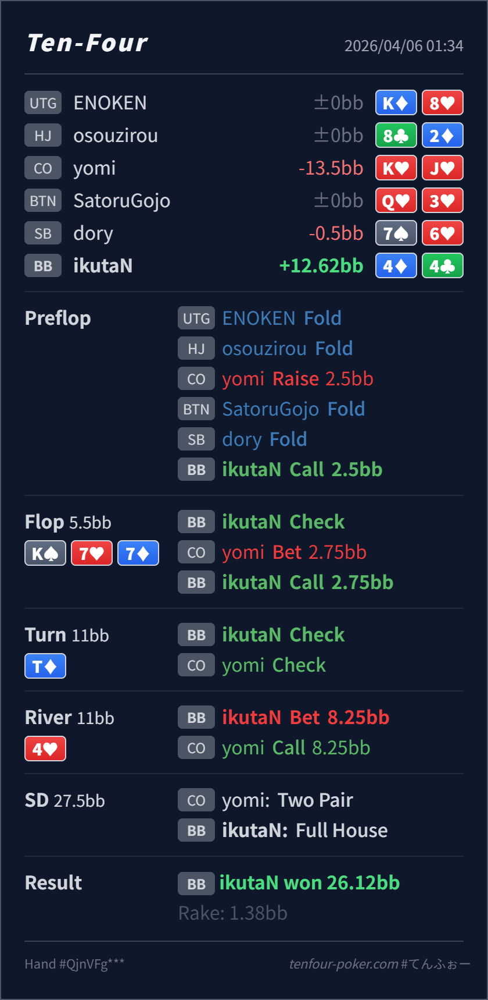

Preflop
良い44 は BB defend として十分自然です。
主論点は、paired board の underpair を雑に降ろさず、turn check-check 後の river lead までつなげられるかです。当時の思考メモはないので、「underpair だから flop で降りたくなる」「boat でも paired board が怖い」という仮定で見ます。結論は、flop call、turn check、river lead がかなり筋の良い line です。
4♦4♣K♠ 7♥ 7♦ / T♦ / 4♥underpair だから flop で降りたくなる、または river が paired で怖いから受け身になりたくなる という仮定で見ます。4♦4♣2.5BB, BB callK♠ 7♥ 7♦ / T♦ / 4♥2.75BB, BB call8.25BB, CO call
良い44 は BB defend として十分自然です。
K♠ 7♥ 7♦良い
Hero は underpair ですが、paired board では相対的なショーダウン価値があります。
T♦良い
Hero はまだ弱めですが、相手レンジはかなり cap します。
4♥かなり良い
Hero は full house で一気に上位です。相手の capped range に対して強く value を取りにいけます。
| 論点 | その場で置きがちな見立て | どこがズレたか | 次回の基準 |
|---|---|---|---|
flop の 44 | K high board に当たっていないので half-pot に降りたくなる | paired board の underpair は相対的なショーダウン価値があり、44 はまだすぐ fold するほど弱くありません。 | paired board では 未ヒット より 相対的ショーダウン価値 を先に見る |
| river の lead | boat でも board が paired で怖いので受け身に回したくなる | turn check-back 後の CO range はかなり cap し、Kx, Tx, pocket などの second best が残ります。 | turn が check-check で終わった OOP 側は、river で lead を持てる場面がかなりある |
| ストリート | その時点の見え方 | 判断の焦点 | 評価 | 推奨 |
|---|---|---|---|---|
| Preflop | CO open range は broadway、suited Ax、middle pair、suited connector を広く含みます。 | 44 は BB defend として十分自然です。 | 良い | ここは call でよいです。 |
Flop K♠ 7♥ 7♦ | CO の 50%pot c-bet には Kx, AA-QQ, A-high, backdoor 付き air が広く残ります。 | Hero は underpair ですが、paired board では相対的なショーダウン価値があります。 | 良い | check-call が自然です。 |
Turn T♦ | CO の check-back で、Kx, A-high, JJ-88, 一部 give up がかなり残ります。 | Hero はまだ弱めですが、相手レンジはかなり cap します。 | 良い | check でよいです。ここで無理に lead しなくて問題ありません。 |
River 4♥ | turn check-back 後の CO range は Kx, Tx, pocket pair, A-high 寄りです。 | Hero は full house で一気に上位です。相手の capped range に対して強く value を取りにいけます。 | かなり良い | river lead は良いです。size も 75%pot 前後で十分自然です。 |
44 のような中弱ショーダウン hand を flop で雑に降ろさないことが、この hand の出発点としてかなり良いです。Kx を降ろしにくいなら、今回の 75%pot はかなり取りやすいです。Kx を慎重に降ろす相手が少ないと読めるなら、full house はさらに大きく打つ選択も十分あります。